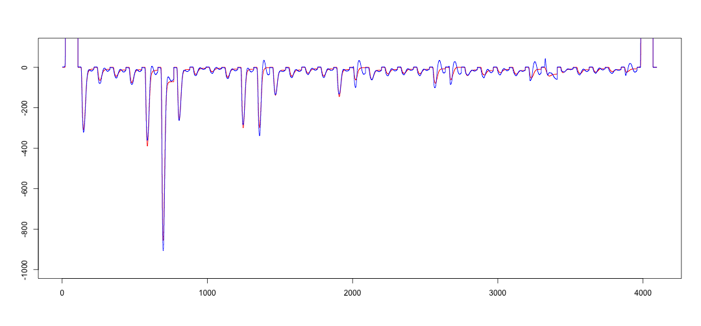

Outlock
- What they do at GSI?
- Prespec project.
- Teams and technology.
- Software requirements.
- Data source.
- Software structure.
- General analysis.
- Analysis example: Gamma 3D detection.
--- .class #id
GSI (Heavy Ion Research Institute)

--- &twocol
Prespec project
*** =left
- About 34 research groups from 12 different countries.
- Around 250 scientist.
Tasks:
- Perform highly complex nuclear physics experiments
- Develop top of the line detector systems.
- Dig through TBytes of data to find unique signatures.
- Push the boundaries of nuclear physics knowledge.
*** =right
--- &twocol2
Teams and technology.
*** =left

*** =right
Local team:
- 10 Postdocs and Engineers.
- 12 Ph.D. students.
Analysis & Online:
- 1 Full-time postdoc (Me).
- 2 Part-time postdocs.
- 3 Ph.D. Students.
Technology:
- Bash.
- Object-oriented c++.
- Root framework (Cern).
- Go4 framework.
Requirements
- Work with a version control system (mercurial).
- Software documentation system (doxygen).
- Wiki page for team and users interaction.
- Run on linux or mac pc or laptop.
- Create installation package as an Arch/Ubuntu package for the users, defining all the environment variables, folders and supporting libraries needed.
- The software had to be easy to use, and flexible to be modified by PhD students.
Data source
- The Data Analysis team had the responsibility to analyze online (real-time) the data obtained from experiments performed at the \( \gamma\)-spectroscopy Group at GSI.
- The data was coming from many different type of detectors connected via analog-digital signal (ADC) and time-digital (TDC) converters. The full experiment contained:
- 12 VME crates, 24 modules, 64 bus signals. Total of > 18000 individual signals.
- Total data collected about of 1TB/day of experiment.
- The signals were preprocessed throughout the GSI data acquisition system which builds the data into and event. An event is a binary data frame that contains all the necessary information.
- Geographical position of the signal -> which detector
- size of the data -> how many bites
- timestamp -> To temporally correlate the data
Software Structure

Analysis
- Basic spectra: Gaussian smearing from the calibration, linear and non-linear regression.
- Differential energy/temporal gradient for particle tracking detectors.
- 3D reconstruction for ion identification.
- Gamma spectroscopy: Signal processing.
Gamma 3D detection
Deconvolution (reverse analysis).

Gamma interaction
- Gamma rays interact with matter via Compton scattering.
\[
E_{\gamma}=\frac{E_{\gamma_0}}{1-\cos{\theta}}
\]
---&twocol3
Gamma 3D mapping
***=left

***=right
- The interaction points form clusters.
- Cluster identification and selection is performed following the Compton scattering formula.
Signal Processing
Noise reduction (Filtering), parametrization reduction (random forest).
- Takes more than 200 parameters!

---&twocol
Gamma Spectroscopy
***=fullwidth
Histograming, Gaussian fitting.
***=left
***=right
Visualization
- Interactive visualization is provided to the users.
- They have to be able to manipulate ranges, superposition and gate selection.
- Display 1D, 2D and 3D visualization and projections.
- Gating capabilities (querying!), select data by other related variables in a visual form.
- Fitting and modeling capabilities.
- Create new graphics from new variables.
Performance challenges.
- Memory efficient, specialy for 2D and 3D visualization.
- Fast, process at least 4000 events/s.
User interface

What if?
With some more computer infrastructure:
- Use c++ libraries like TBB and PPL to include parallel programming.
- Use a scheduling optimization to run different analysis.
- Utilize servers to store the data more efficiently to facilitate access.

Thank you.